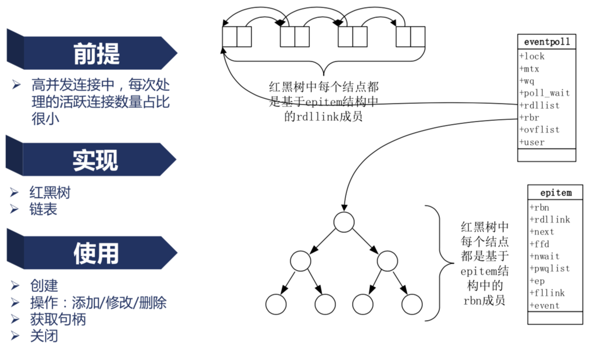

10. nginx的事件以及epoll
nginx事件驱动模型¶
1简介事件驱动模型
事件驱动模型是实现异步非阻塞的一个手段。事件驱动模型中，一个进程（线程）就可以了。 对于web服务器来说，客户端A的请求连接到服务端时，服务端的某个进程（Nginx worker process）会处理该请求， 此进程在没有返回给客户端A结果时，它又去处理了客户端B的请求。 服务端把客户端A以及客户端B发来的请求作为事件交给了“事件收集器”， 而“事件收集器”再把收集到的事件交由“事件发送器”发送给“事件处理器”进行处理。 最后“事件处理器”处理完该事件后，通知服务端进程，服务端进程再把结果返回给客户端A、客户端B。 在这个过程中，服务端进程做的事情属于用户级别的，而事件处理这部分工作属于内核级别的。 也就是说这个事件驱动模型是需要操作系统内核来作为支撑的。
Nginx中的事件驱动模型¶
Nginx服务器响应和处理Web请求的过程，就是基于事件驱动模型的，它也包含事件收集器、事件发送器和事件处理器等三部分基本单元。Nginx的“事件收集器”和“事件发送器”的实现没有太大的特点，重点介绍一下它的“事件处理器”。 通常，我们在编写服务器处理模型的程序时，基于事件驱动模型，“目标对象”中的“事件处理器”可以有以下几种实现办法： “事件发送器”每传递过来一个请求，“目标对象”就创建一个新的进程，调用“事件处理器”来处理该请求。 “事件发送器”每传递过来一个请求，“目标对象”就创建一个新的线程，调用“事件处理器”来处理该请求。 “事件发送器”每传递过来一个请求，“目标对象”就将其放入一个待处理事件的列表，使用非阻塞I/O方式调用“事件处理器”来处理该请求。 以上的三种处理方式，各有特点，第一种方式，由于创建新的进程的开销比较大，会导致服务器性能比较差，但其实现相对来说比较简单。 第二种方式，由于要涉及到线程的同步，故可能会面临死锁、同步等一系列问题，编码比较复杂。 第三种方式，在编写程序代码时，逻辑比前面两种都复杂。大多数网络服务器采用了第三种方式，逐渐形成了所谓的“事件驱动处理库”。 事件驱动处理库又被称为多路IO复用方法，最常见的包括以下三种：select模型，poll模型和epoll模型。Nginx服务器还支持rtsig模型、kqueue模型、dev/poll模型和eventport模型等。通过Nginx配置可以使得Nginx服务器支持这几种事件驱动处理模型。这里详细介绍以下它们。
epoll事件模型¶
epoll 是 Linux 内核为处理大批量文件描述符而作了改进的 poll , 是 Linux 下多路复用 IO 接口 select/poll 的增强版本 , 它能显著提高程序在大量并发连接中只有少量活跃的情况下的系统 CPU 利用率 . 另一点原因就是获取事件的时候 , 它无须遍历整个被侦听的描述符集 , 只要遍历那些被内核 IO 事件异步唤醒而加入 Ready 队列的描述符集合就行了 .
 Epoll 性能优势主要源于它不用遍历 假设有100万个链接 其它事件可能都需要遍历所有链接，而Epoll只要遍历活跃的链接，这样大大提升了效率
而 Select 或者 Poll 的实现是有问题的 , 因为每一次去取操作系统的事件时 , 都需要把这 100W 个连接都扔给操作系统 , 让它去依次的判断哪些连接上有事件进来了 . 所以可以看到 , 操作系统做了大量的无用功 , 其扫描了大量不活跃的连接 . 而 epoll 就使用了这样一个特性 , 因为每次处理的活跃连接数量占比很小 .
上图可以看到 , 活跃的连接维护了一个 eventpoll , 通过两个数据结构链表和红黑树 , 把活跃和不活跃两件事分开了 , 也就是说 Nginx 每次取活跃连接的时候 , 只需要去遍历一个链表 , 这个链表里仅仅只有活跃的链接 , 这样的话效率就非常的高 . 还会用到红黑树 . 例如 , Nginx 收到 80 端口建立的连接请求 , 建立成功以后 , 要添加一个读事件 , 这个读事件是用来读取 HTTP 消息的 , 这个时候可能会添加一个新的事件 , 可能是写事件添加进来 , 这个时候添加的就会放到红黑树中 , 这样一个二叉平衡树能保证插入时的效率是 O(log n) . 如果现在不想再处理读事件或者写事件 , 只需要从这个平衡二叉树中移除一个节点就可以了 , 复杂度同样是 O(log n) , 效率也是非常高的 .
再看看链表的增减 , 前面提到了 , 读取一个事件的时候 , 也就是获取句柄的时候 , 只是去遍历 rdllink , 就是遍历准备好的连接 , 读取到就没了 . 从内核态到用户态 , 只读取一点点东西 , 效率非常的高 . 当操作系统接收到网卡中发送来的报文的时候 , 这个链表就会增加一个新的元素 , 操作也是非常快的 .
nginx的请求切换¶
- 传统的切换方式
每一个请求如果是一个HTTP请求的话,我们把它简化为三部分,比如说第一部分我们收到HTTP请求的header 那么收完header以后,我大致就知道我该交给上游的哪一台服务器去处理,应用一些负载均衡算法,那么接下来我可能会向上游服务器建立连接,或者说我本地处理的时候,我接下来会判断这个header中有没有Content-Length指明它可有body,如果含有body的情况下尼?我接下来会读下一个读事件,去处理完它所有的HTTPbody;那么处理完HTTPbody以后尼,我们可能还会向它发送一个HTTP响应,那么在这样的一个过程中尼,它实际上可能表现为三个事件,那么传统的服务尼,比如说Apache和Tomcat它们在处理的时候尼,是每一个进程,同一时间只处理一个请求,比如说process1在处理request1的时候,当request1目前网络事件不满足的情况下,就会切换到process2,就会处理process2上面的request2,而request2可能很快又不满足了,比如写一个响应的时候,发现缓存区都已经满了,也就是说网络中已经用拥塞了,所以说我们的滑动窗口已经没法向前滑动,以至于我们调write方法我们没有办法写入我们需要写入的这样一个字节,当write方法是非阻塞的时候,这个时候我们阻塞类的写方法尼,一定又会导致我们所在的进程又发生一次切换,现在切换到process3,操作系统选择了process3;因为process3上的 request3处于一个满足的状态;我们可以继续往下执行,在执行的过程中尼,process3可能用完了它的时间片,process3又被操作系统切换;又切换到process1;
如此往复下去;这里会有一个很大的问题,就是我们绿色的箭头在我们当前的CPU的频率下它所消耗的时间大概是5微妙,这个5微妙虽然很小,如果我们并发的连接数和并发的进程开始增加的时候,它不是一个线性增加,而是一个指数增加;所以当我们并发连接非常多的情况下,这个进程间的消耗是非常客观的,以至于消耗了绝大部分的计算能力,所以这种传统的WEB服务它在依赖操作系统的进程调度的方法去实现它的并发连接数,而操作系统的进程调度仅仅适用于很少量的数百 上千这样的进程间做切换;这样的低并发还能接收;再多 几万 几十万的情况下,就无法容忍了;
- 那么nginx是怎么处理的
当蓝色的请求,处理事件不满足的情况下,它在用户态直接就切换到了绿色请求,这样尼,我们就没有了中间进程间切换的一个成本,因为网络事件不满足,除非是我们nginx的worker进程所使用的时间片已经到了,而时间片的长度尼一般是5毫秒到800毫秒;所以我们在nginx的worker的配置上往往会把它的优先级加到最高,比如说我们通常会加到负的19,这样我们的静态优先级提高的比较高的的时候,往往操作系统给我们分的时间片是比较大的;这样我们的nginx才能比较好的在用户态完成请求的切换;使得CPU少做无用功 参考:https://www.cnblogs.com/pizixu/articles/12449010.html